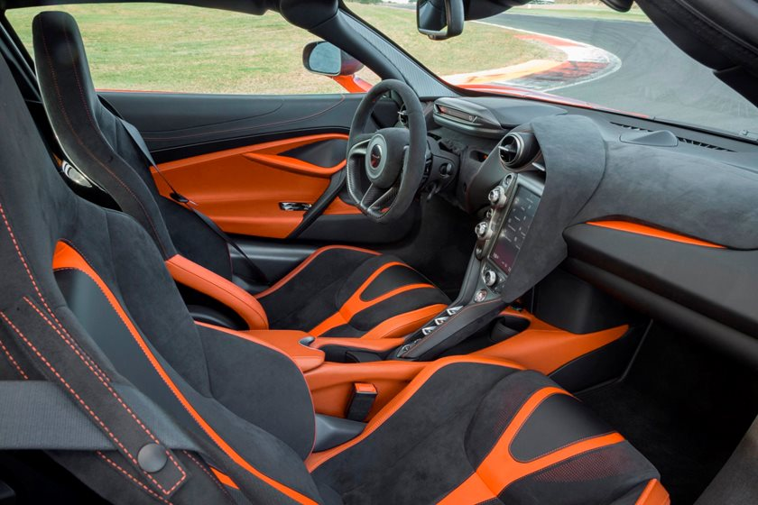

The 720 S's greatest hits include a 2.6-second shot to 60 mph, 1.10 g of cornering grip, and a zero-to-70-mph stop in just 141 feet. Best of all, those figures are basically interchangeable between body styles. While the McLaren's interior isn't as flamboyant as, say, Lamborghini's, it indulges the driver with better outward visibility and fewer distracting controls. With the 2022 720S, it's all about the melding of driver and car—and few other vehicles produce a purer connection.
Most convertible supercars are compromised by more weight and less rigidity, but the 720S Spider is hardly affected at all. Despite the retractable hardtop adding some weight, the Spider is just as quick as the coupe and its open-air cockpit enhances the driving experience. We'd choose it in the Performance spec, with its carbon-fiber exterior addenda and racy interior upgrades. Likewise, we'd select the Pirelli P Zero Corsa tires for maximum stick and the electrochromic glass roof.
Personalization options are extensive and subjective, so the only other add-ons we'd want are the front and rear parking sensors, front-end vehicle lift, and McLaren Track Telemetry with a lap-time recorder and three cameras.Since the McLaren 720S clearly isn't a typical commuter car, it doesn't receive the typical EPA certification. We estimate the mid-engine machine would achieve between 15 mpg in the city, 22 mpg on the highway, and 18 mpg combined.
However, we expect its real-world fuel economy to vary drastically depending on how much time it spends with its throttle wide open.
Engine, Transmission, and Performance
Both the coupe and convertible version cradle a twin-turbocharged 4.0-liter V-8 that produces 710 horsepower and 568 pound-feet of torque. Those totals are funneled through a paddle-shifted seven-speed dual-clutch automatic transmission. The 720S coupe we tested at our track rocketed to 60 mph in 2.6 seconds and reached 100 mph in 5.2 ticks.

We also had the opportunity to pilot a similar version at our annual Lightning Lap, where we called it "wonderfully fun and scary fast." We drove one on a twisting and ill-maintained road in California, where its advanced suspension was able to smooth out imperfections and the steering system was a communicative companion. The experience was further evidence that McLaren has unrivaled chassis tuning.
Source/Reference: https://www.caranddriver.com/mclaren/720s